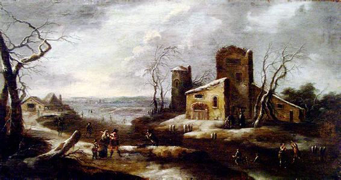
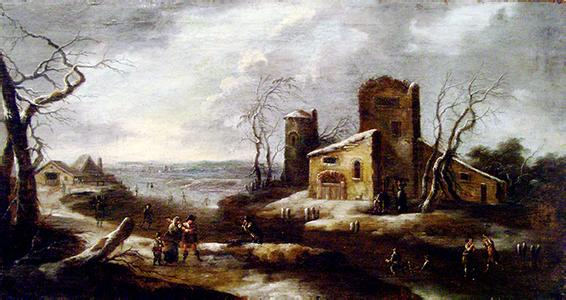

欧洲国家


 
西欧的中世纪是个特别“黑暗的时代”。基督教教会成了当时封建社会的精神支柱，它建立了一套严格的等级制度，把上帝当做绝对的权威。文学、艺术、哲学一切都得遵照基督教的经典——《圣经》的教义，谁都不可违背，否则，宗教法庭就要对他制裁，甚至处以死刑。《圣经》里说，“人类的祖先是亚当和夏娃。由于他们违背了上帝的禁令，偷吃了乐园的禁果，因而犯了大罪，从此罪就降临到了世界。” 在教会的管制下，中世纪的文学艺术死气沉沉，万马齐喑，科学技术也没有什么进展。黑死病在欧洲的蔓延，也加剧了人们心中的恐慌，使得人们开始怀疑宗教神学的绝对权威。
中世纪的后期，资本主义萌芽在生产力的发展等多种条件的促生下，于欧洲的意大利首先出现。资本主义的萌芽是商品经济发展到一定阶段的产物，商品经济是通过市场来运转的，而市场上择优选购、讨价还价、成交签约，都是斟酌思量之后的自愿行为，这就是自由的体现，当然要想有这些“自由”还要有生产资料所有制的自由，而所有这些自由的共同前提就是人的自由。此时意大利呼唤人的自由，陈腐的欧洲需要一场新的提倡人的自由的思想运动。
资本主义萌芽的出现也为这场思想运动的兴起提供了可能。城市经济的繁荣，使事业成功财富巨大的富商、作坊主和银行家等更加相信个人的价值和力量，更加充满创新进取、冒险求胜的精神，多才多艺、高雅博学之士受到人们的普遍尊重。这为文艺复兴的发生提供了深厚的物质基础和适宜的社会环境，以及人才。
在古希腊和古罗马，文学艺术的成就很高，人们也可以自由地发表各种学术思想，这和黑暗的中世纪是个鲜明的对比。14世纪末，由于信仰伊斯兰教的奥斯曼帝国不断入侵东罗马（拜占廷），东罗马人带着大批的古希腊和罗马的艺术珍品和文学、历史、哲学等书籍，纷纷逃往西欧避难。一些东罗马的学者在意大利的佛罗伦萨办了一所叫“希腊学院”的学校，讲授希腊辉煌的历史文明和文化等。这种辉煌的成绩与资本主义萌芽产生后，其优越性与黑暗的比较，使得人们追求的精神境界是一致的。于是，许多西欧的学者要求恢复古希腊和罗马的文化和艺术。这种要求就像春风，慢慢吹遍整个西欧。文艺复兴运动由此兴起。
其实今天的西方世界，其人文精神与国家制度，无非就是古代希腊与罗马时代的复制而已，意大利的文艺复兴时代，除了增加了先进的科学技术外，和古希腊城邦时代没什么区别。也就是说，如果希腊或罗马的时代多延续一些时间，人类会更加进步。这在东西方都是一样的，除非科学技术压倒性的优势，否则高等文明往往会被低等的征服，等到这些低等文明再发展起来，已经不知道过了多少时间。日耳曼蛮族进入罗马只会去掠夺财富，就像十字军进入君士坦丁堡和耶路撒冷一样。所谓资产阶级，就是生意人而已，做生意，交换物品，从人类的食物吃不完就已经出现了。这些生意人走遍当时的已知世界，开拓了视野，了解到不同文明之间的差异，明白了世界不是只有一种声音，人文主义复兴已经不可避免。